University of Pennsylvania'da kuantum hesaplama ve yapay zekâ araştırmaları yaptı, Penn Quantum Computing Club'ın eş başkanlığını üstlendi. Freya'dan önce yapay zekâ destekli bir eğitim girişimi olan MotionShark'ın kurucu ortağıydı. Freya'yı Y Combinator S25 döneminde kurdu ve CEO olarak şirketi yönetiyor. Dünyanın en gerçekçi ses modelini geliştiren araştırma ekibine liderlik ediyor ve FreyaTTS teknik raporunun yazarları arasında.
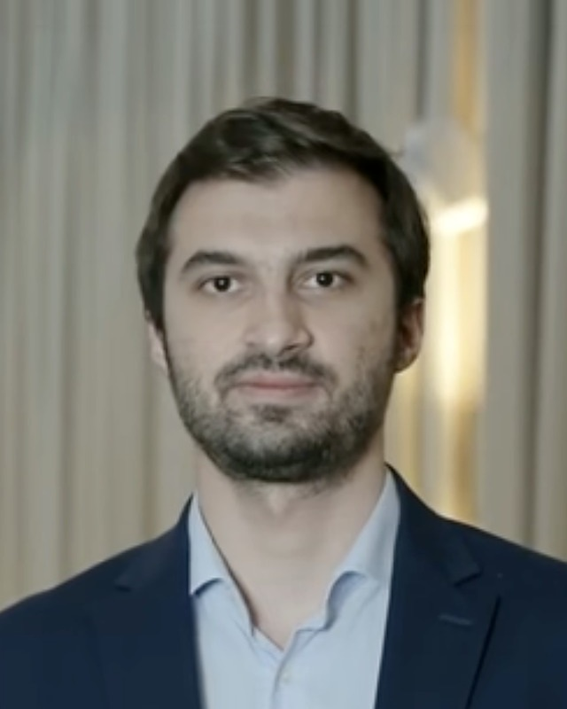
Yavuz Öztürk
Founding Engineer
Hakkında →
Bilkent University'de Bilkent AI Society'yi kurdu ve kurucu başkanı oldu. TÜBİTAK BİLGEM ve Utrecht University'de doğal dil işleme üzerine araştırma yaptı, Infrastack AI'da kurucu mühendis olarak çalıştı. Freya'da Design Arena'da birinci olan ses modelinin geliştirilmesinde yer aldı ve FreyaTTS-small'un yazarlarından. Bankalar için Freya'nın kendi GPU kümeleri üzerindeki egemen bulutunu ve kurum içi kurulumlarını yönetiyor.
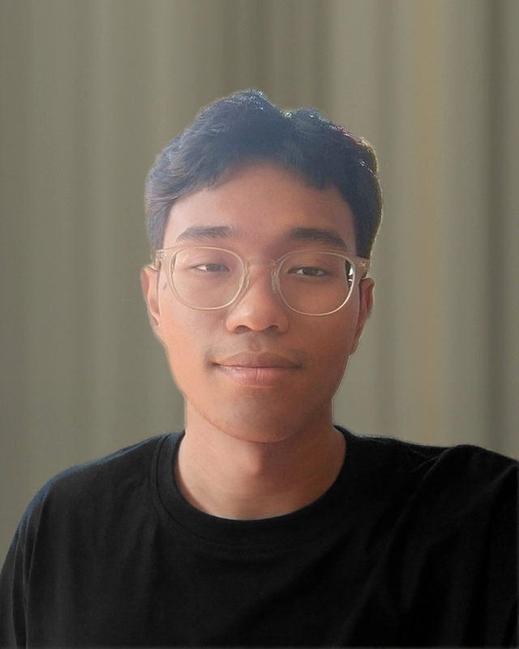
Pyae (Ricky) Myo
Founding Engineer
Hakkında →
Yazılım geliştirmede altı yılı aşkın deneyime sahip. Vacuumlabs, Persona AI ve Yoma Group'ta çalıştı, MotionShark'ta ses yapay zekâsı altyapısını sıfırdan kurdu. Cohere için düşük kaynaklı diller üzerine model fine-tune çalışmalarına katkı verdi. Freya'nın kurucu mühendisi olarak ürün, altyapı, telefon entegrasyonları ve güvenlik pipeline'larının tamamını yönetiyor.
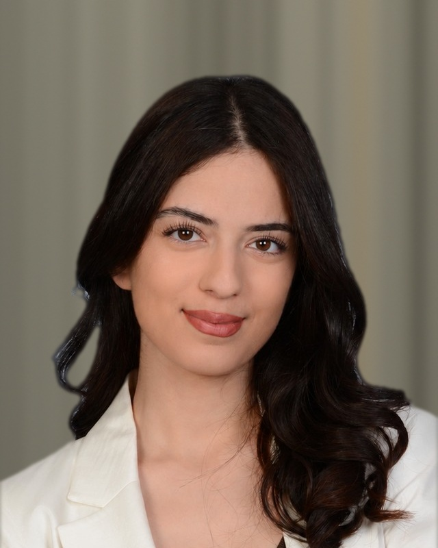
Mısra Koşarsoy
Operations
Hakkında →
Freya'ya katılmadan önce Azimut Portföy ve Hedef Portföy'de portföy yönetimi alanında çalıştı. Freya'da şirketin operasyonlarını yönetiyor. Satış süreçleri, sözleşmeler, satın alma ve kurumsal müşterilerle koordinasyondan sorumlu.
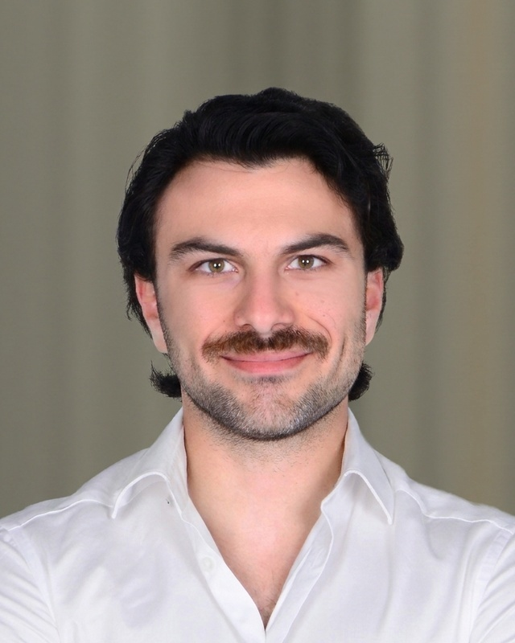
Can Kocagil
Head of Product
Hakkında →
Daha önce 130 ülkede 620 binden fazla kullanıcıya ulaşan yatırım platformu Finceptor'ın kurucu ortağı ve CEO'suydu. Ardından Londra'da otonom yatırım ajanı Upcap'in kurucu ortağı ve ürün lideri oldu. Kariyerine OREDATA'da bankacılık, enerji ve telekom için makine öğrenmesi modelleri geliştirerek başladı. Freya'da Head of Product olarak ürün ve teslimat ekibini yönetiyor.
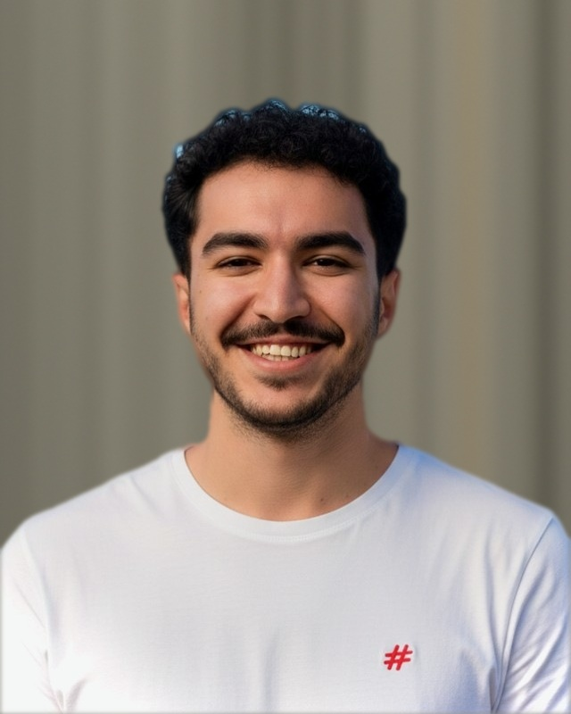
Yusuf Danış
Forward Deployed Engineer
Hakkında →
Freya'dan önce Yapı Kredi Teknoloji'de 16 milyonu aşkın müşteriye hizmet veren bir bankacılık altyapısında, Architecht'te ise açık bankacılık platformunda çalıştı. Freya'da Lead Forward Deployed Engineer olarak bankalar ve sigorta şirketleri için sesli yapay zekâ asistanlarını uçtan uca kuruyor ve canlıya alıyor.
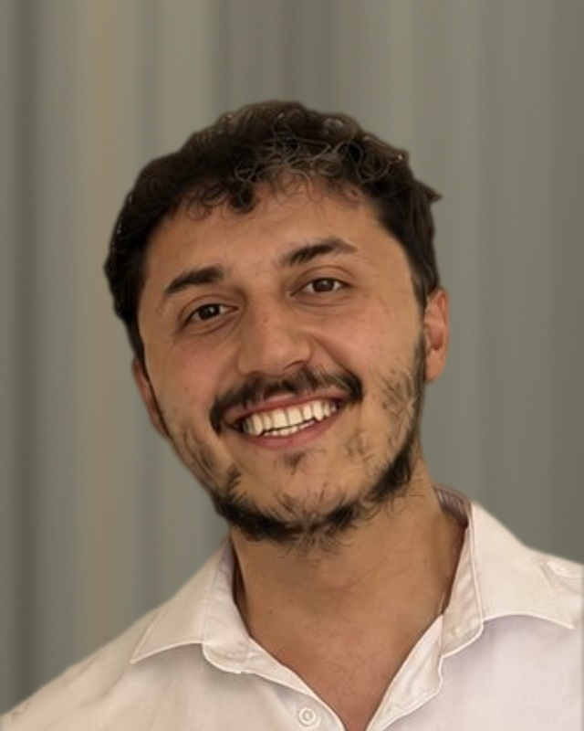
Yunus Emre Yurdagül
Forward Deployed Engineer
Hakkında →
Fulbright bursuyla Columbia University'de finans mühendisliği okudu ve Columbia Engineering'de asistanlık yaptı. Mastercard Advisors'ta danışman olarak çalıştı, Tiffany & Co., Kering ve Property Finder'da strateji ve analitik rollerinde yer aldı. Daha önce yapay zekâ destekli ürün testi girişimi SynUX AI'ın kurucu ortağıydı. Freya'da kurucu Forward Deployed Engineer olarak regüle sektörlerde sesli asistanları canlıya alıyor.
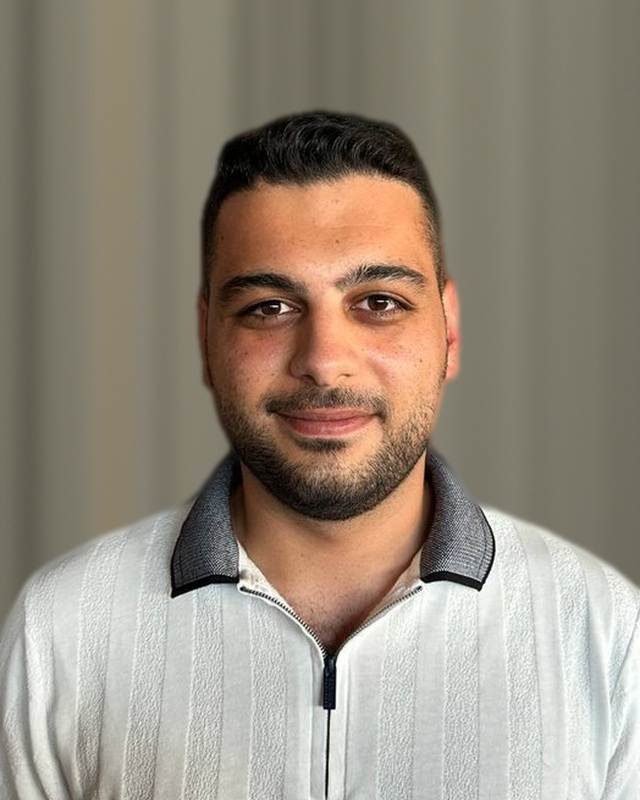
Berke Yalçın
Forward Deployed Engineer
Hakkında →
Finceptor'da Head of Growth olarak 600 binden fazla kullanıcıya ulaşan büyümeyi ve 150'yi aşkın B2B ortaklığı yönetti. Öncesinde DeepMaze Finance'te pazarlama müdürüydü ve Scene Global'de Chief of Staff olarak çalıştı. Freya'da Forward Deployed Engineer olarak müşteri projelerinin kurulumunu ve başarısını yönetiyor.
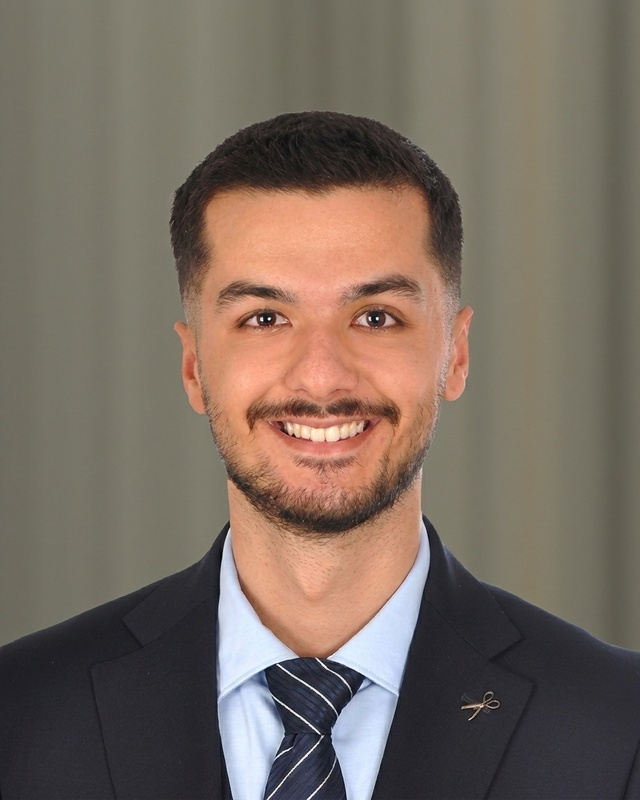
Harun Bakırtaş
Forward Deployed Engineer
Hakkında →
Freya'dan önce Mastercard'da Associate Consultant olarak çalıştı. Boston Consulting Group, Raiffeisen Bank International, Pfizer ve QNB Türkiye'de danışmanlık, yatırım bankacılığı ve pazarlama alanlarında deneyim kazandı. Freya'da Forward Deployed Engineer olarak bankacılık ve sigortacılık müşterilerinde tahsilat ve satış asistanlarının kurulumunu yönetiyor.
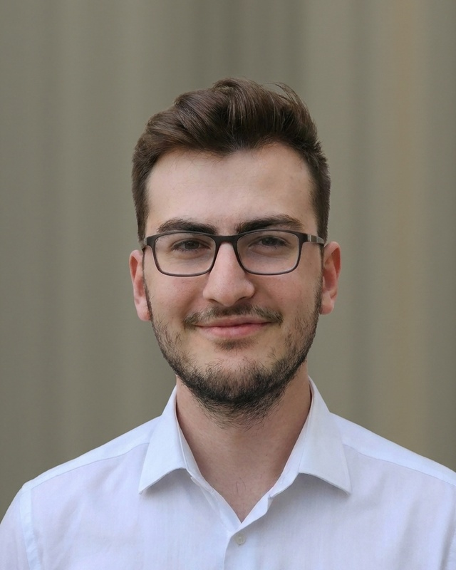
Murathan Bayram
Forward Deployed & AI Engineer
Hakkında →
Upcap, Tachyo ve Tokens of Appreciation'da kurucu mühendis olarak yapay zekâ ve blockchain ürünleri geliştirdi. İTÜ Çekirdek BigBang'de ilk 50'ye giren Trilema Wallet'ın ve yapay zekâ ajanı platformu Dialoq'un kurucu ortağıydı. Freya'da AI Engineer ve Forward Deployed Engineer olarak müşteriler için asistanlar ve sistemler geliştiriyor.
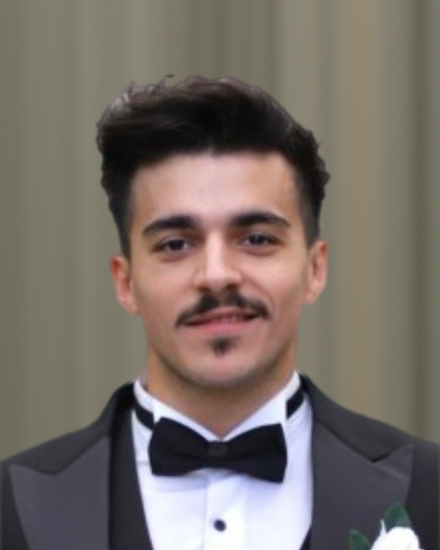
Talha Sarı
Forward Deployed & AI Engineer
Hakkında →
Freya'dan önce Garanti BBVA Teknoloji'de yazılım ekipleri için MCP tabanlı yapay zekâ araçları geliştirdi. Jetlink'in ilk yapay zekâ mühendisi olarak büyük kurumların kullandığı çok ajanlı bir ürünü sıfırdan canlıya taşıdı. SafeVideo AI'da kurucu yapay zekâ mühendisiydi. Freya'da sigortacılık ve bankacılık müşterileri için sesli asistanlar geliştiriyor.
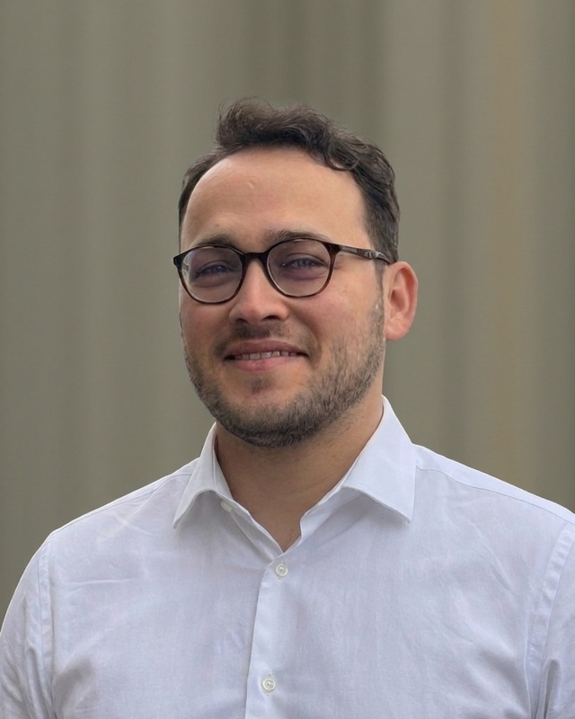
Mehmet Uzel
Forward Deployed & AI Engineer
Hakkında →
Huawei'de telekom verisi analizi ve makine öğrenmesi üzerine, Thomas Murray'de Londra merkezli ekipte Python servisleri üzerine çalıştı. Kurduğu UZELABS'ta 150 binden fazla indirmeye ulaşan mobil ve yapay zekâ uygulamaları geliştirdi. Freya'da AI Engineer ve Forward Deployed Engineer olarak asistan kurulumu ve performans iyileştirmeleri üzerinde çalışıyor.
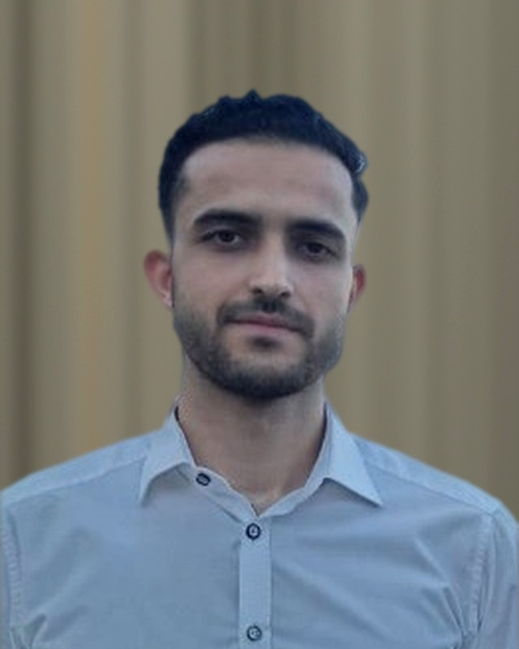
Reşit Aydın
Forward Deployed & AI Engineer
Hakkında →
Freya'dan önce Optimum7'de AI Engineer, Coiltech Teknoloji'de AI Research Engineer olarak çalıştı. Finlandiya'da digiole'da RAG sistemleri üzerine staj yaptı, Gebze Teknik Üniversitesi'nde araştırmacı olarak yer aldı. Freya'da platform geliştirmeleri, simülasyonlar ve kişisel veri maskeleme üzerinde çalışıyor.
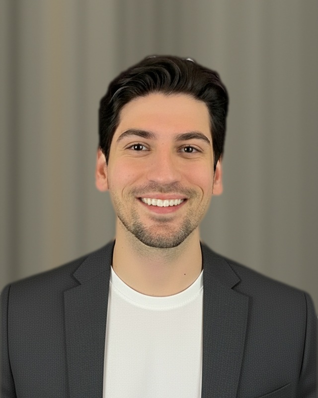
Ege Hakan Karaağaç
Forward Deployed & AI Engineer
Hakkında →
Amazon'da Lüksemburg'da Checkout ve Tax ekiplerinde, ardından Dream Games'te yüksek trafikli backend sistemlerinde çalıştı. Kurucu ortağı ve CTO'su olduğu BrandVox AI'ı tek başına 1000'den fazla kullanıcıya ulaştırdı. Toptal üzerinden Full Stack AI Engineer olarak da çalışıyor. Freya'da AI Engineer ve Forward Deployed Engineer olarak müşteri asistanlarını geliştiriyor.
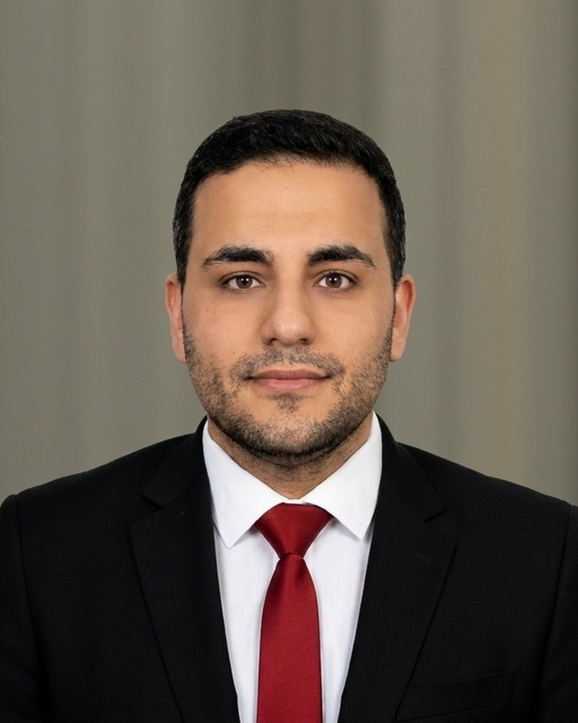
Serkan Özmen
DevOps Engineer
Hakkında →
Halkbank, Garanti BBVA Teknoloji ve Turkcell'de bulut platformları ve OpenShift altyapısı üzerine çalıştı. Freya'da DevOps & Container Platform Team Lead olarak sesli yapay zekâ asistanlarının bankalardaki kurum içi platformunu yönetiyor. Bankalara özel izole ağları, GPU üzerinde çalışan modelleri ve müşterilerin kendi OpenShift ortamlarına yapılan kurulumları tasarlıyor.
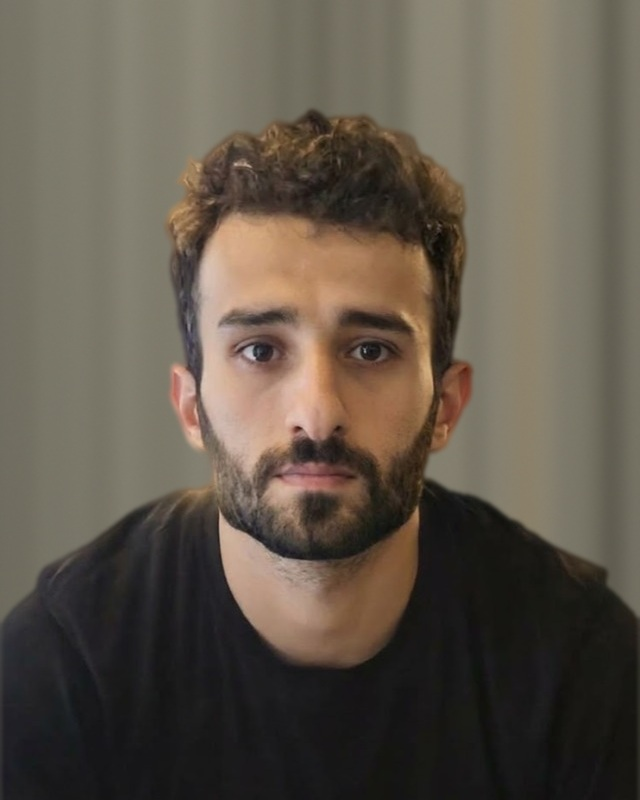
Ömer Yentur
AI/ML Engineer
Hakkında →
Kron'da makine öğrenmesi mühendisi olarak çalıştı, TÜBİTAK RUTE ve MARS Otonom Araçlar'da staj yaptı. Freya'da yapay zekâ ve ses modeli araştırmaları yapıyor. Dünyanın en insansı ses modelini geliştiren ekipte yer aldı ve arXiv'de yayımlanan FreyaTTS ses modeli araştırmasının yazarlarından.
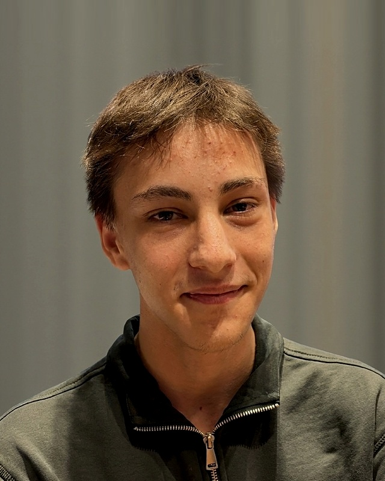
Ahmet Erdem Pamuk
AI/ML Engineer
Hakkında →
MotionShark'ta çok ajanlı sistemler üzerine araştırma mühendisi olarak çalıştı, UMRAM'da video generation ve dünya modelleri üzerine araştırma yapıyor. Freya'da düşük kaynaklı dillerde ses modelleme, TTS mimarisi ve ön eğitimi üzerinde çalışıyor. Dünyanın en insansı ses modelini, Design Arena'da birinci olan Adam & Eve'i geliştiren kişi. İlk açık ağırlıklı Türkçe TTS modeli FreyaTTS-small'u geliştirdi ve arXiv'de yayımlanan ses modeli araştırmasının yazarlarından.